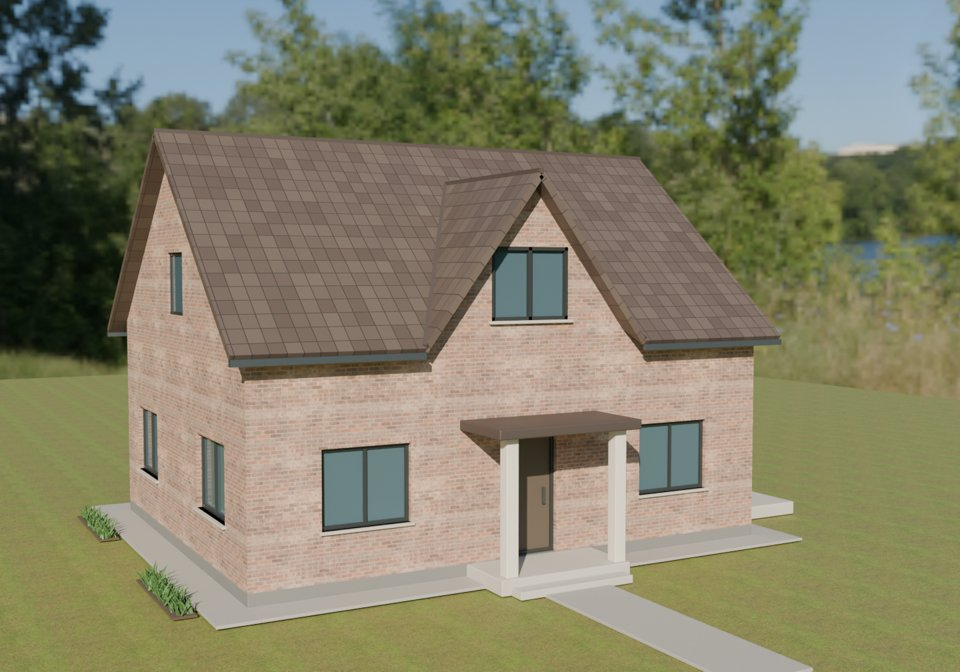
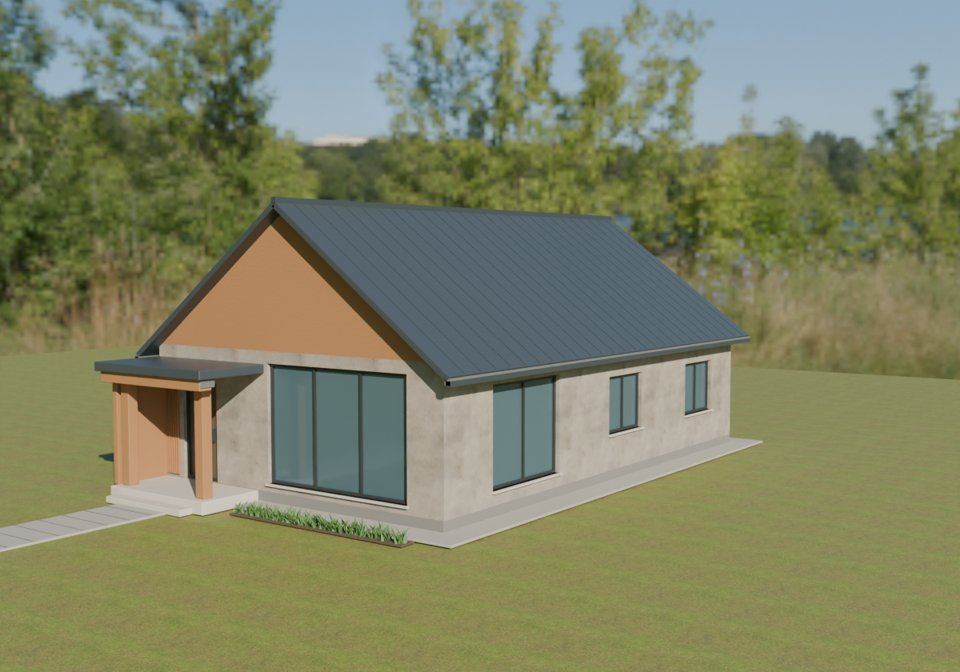
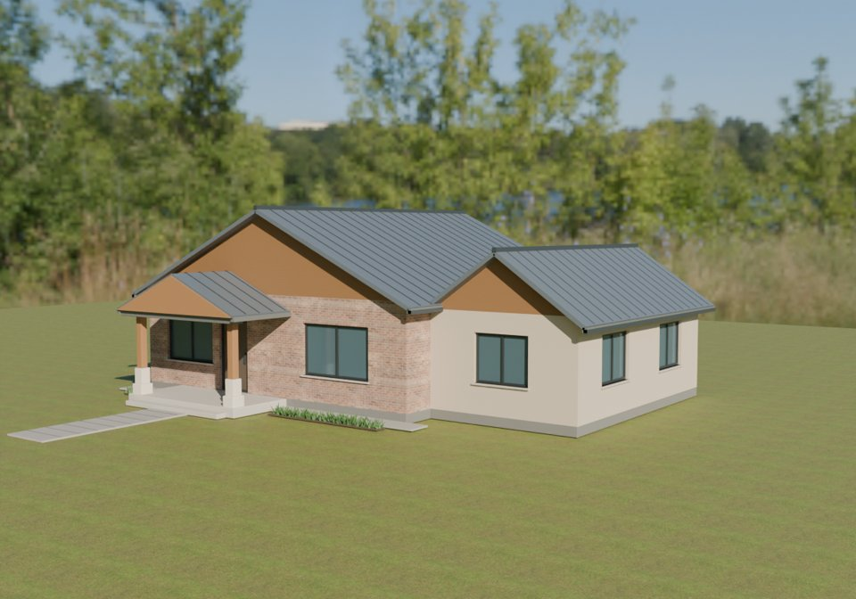
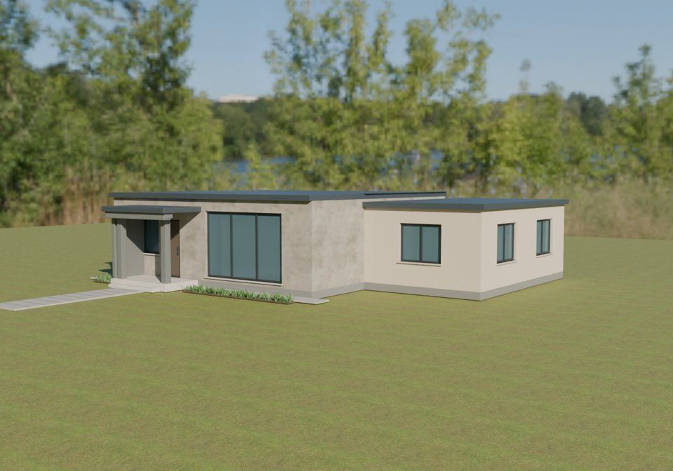
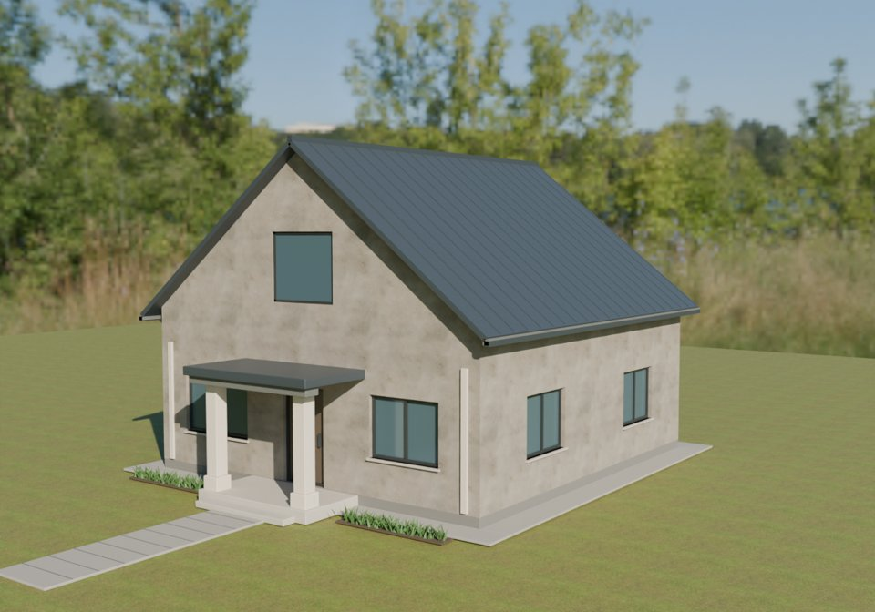
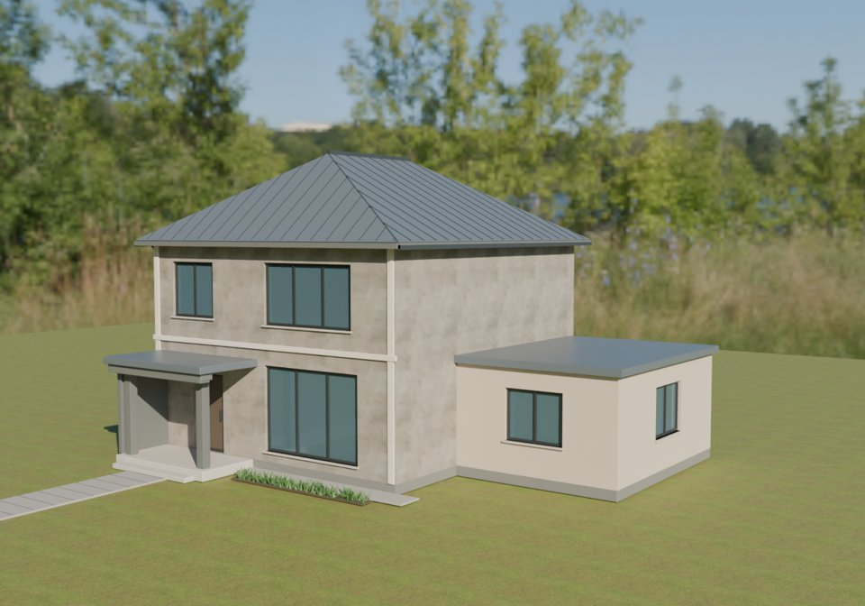

Немецкий кирпичный коттедж
≈ 147,6 м² · 1 этаж + мансарда
6 эскизов · Нажмите на изображение, чтобы увеличить.

≈ 147,6 м² · 1 этаж + мансарда

≈ 108,2 м² · 1 этаж

≈ 142,1 м² · 1 этаж

≈ 127 м² · 1 этаж

≈ 152 м² · 1 этаж + мансарда

≈ 186 м² · 2 этажа